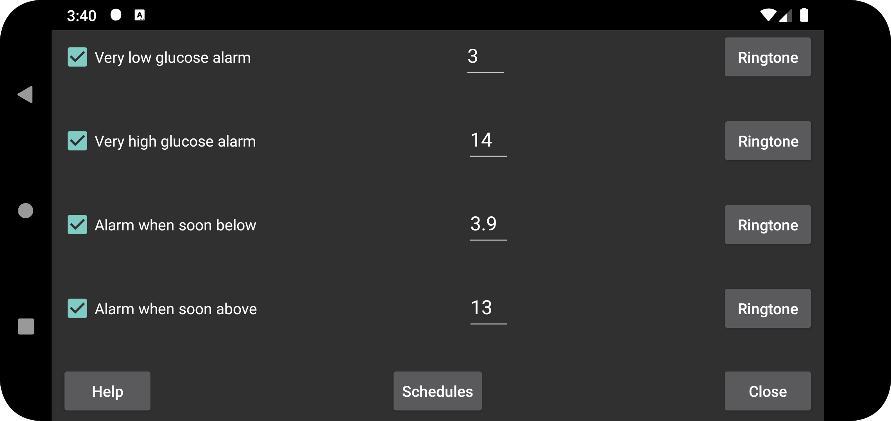

Second low alarm to go off at a threshold lower than the low glucose alarm.
Second high alarm to go off at a threshold higher than the high glucose alarm.
Alarm when falling glucose is predicted to drop below this value soon.
Alarm when rising glucose is predicted to exceed this value soon.
Schedule a certain profile to become active at a certain time of the day. This way you can use other glucose threshold or ringtones during the day and night, or automatically turn off speaking glucose values at night.